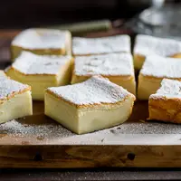

Custard Cake

Description
Custard cake is a delicious custard like food that has a great texture and a delicate flavor.
Not as hard as making an actual custard, custard cake is an easier way to get the delicious custardy flavor and texture.
Ingredients
- 1/2 cup (113g) unsalted Butter
- 2 cups (480ml) Milk
- 4 Eggs, separated
- 4 drops White Vinegar
- 1 1/4 cups (150g) Confectioner's Sugar
- 1 Tablespoon (15ml) Water
- 1 cup (125g) Flour
- 1 teaspoon (5ml) Vanilla Extract
- Extra confectioner's sugar for dusting
Steps
- Preheat the oven to 325°F. Lightly butter or grease a 8"x8" baking dish.
- Melt the butter and set aside to slightly cool. Warm the milk to lukewarm and set aside.
- Whip the egg whites and vinegar to stiff peaks. Set aside.
- Beat the egg yolks and sugar until light. Mix in the melted butter and the tablespoon of water for about 2 minutes or until evenly incorporated.
- Mix in the flour until evenly incorporated. Slowly beat in the milk and vanilla extract until everything is well mixed.
- Fold in the egg whites, 1/3 at a time. Repeat until all of the egg whites are folded in.
- Pour the batter into the prepared pan and bake for 45-60 minutes or until the cake is barely jiggly in the center. If the top browns too quick before the minimum of 45 minutes, then cover the cake with aluminum foil and cook for remainder of time needed.
- Allow cake to completely cool before cutting and then dust with confectioner's sugar. For faster cooling you can place the cake in the fridge. Even after fully cooled, it will still be slightly jiggly because it's a custard layer cake.